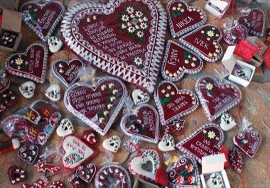

Home / Living Traditions / Mediterranean
Encyclopedia ID 1326
Licitar Heart Decorator
Also known as Licitarsko srce


Press and trim red gingerbread dough, then pipe white icing, mirror shards and flowers onto a heart following a pattern.
Heritage note
Part of the living heritage of Croatia.
Origins
A living tradition passed from person to person; it is not tied to a single dated origin. It belongs to the cultural world of Mediterranean.
Sources
Related entries


Sicilian Cart Painting
Italy · Crafts and making
Beehive Panel Painter
Slovenia · Crafts and making
Gallarija Balcony Builder
Malta · Crafts and making
Luzzu Boat Painter
Malta · Crafts and making
Ebru paper marbling
Turkey · Crafts and making
More from Croatia


Dry Stone Wall Builder
Croatia +4 · Crafts and making